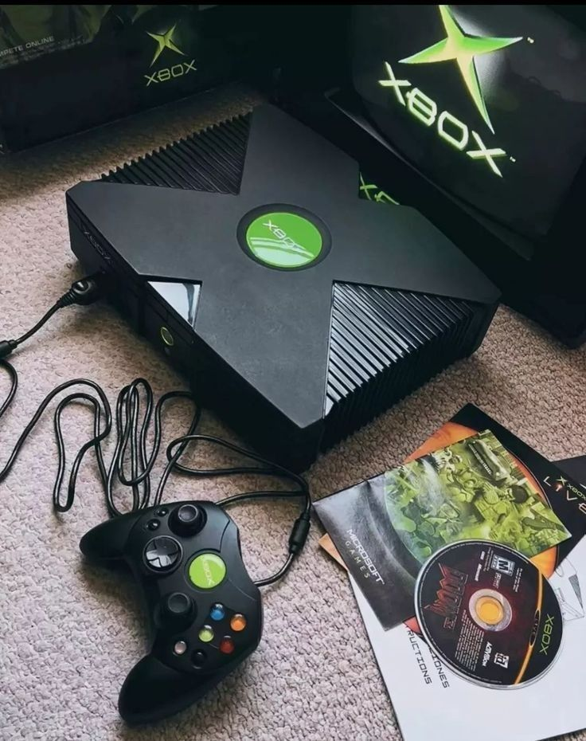
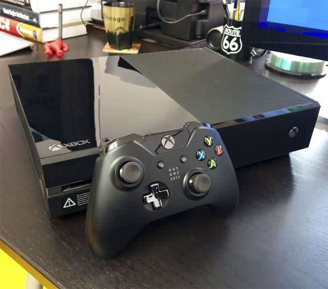
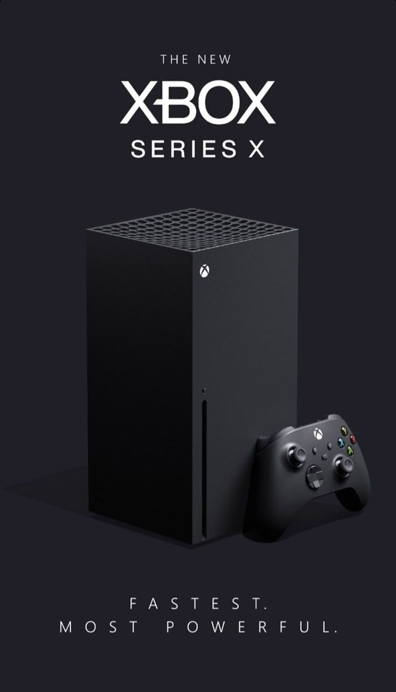

Xbox (2001)
A entrada da Microsoft no mercado, trazendo o poder do DirectX e o primeiro disco rígido interno em um console. Foi onde nasceu a lenda de Halo: Combat Evolved e a revolução da Xbox Live.
Xbox 360 (2005)
Considerado por muitos a "era de ouro" do Xbox. Popularizou o sistema de conquistas (Achievements) e definiu o padrão para o jogo online moderno com títulos como Gears of War e Halo 3.

Xbox One (2013)
Embora tenha focado inicialmente em entretenimento, evoluiu para se tornar a base do Xbox Game Pass, serviço que mudou a forma como consumimos jogos por assinatura. Jogos marcantes: Forza Horizon 4 e Sea of Thieves.

Xbox Series X|S (2020)
Dividido entre o Series X (o console mais poderoso do mundo em hardware bruto) e o Series S (focado em custo-benefício). Ambos utilizam a arquitetura Velocity para carregamentos quase nulos. Jogos: Starfield e Halo Infinite.
Xbox Cloud Gaming
A visão da Microsoft de levar o Xbox além do console físico. Através da nuvem, você pode jogar títulos de nova geração diretamente no seu smartphone, tablet ou PC via streaming.